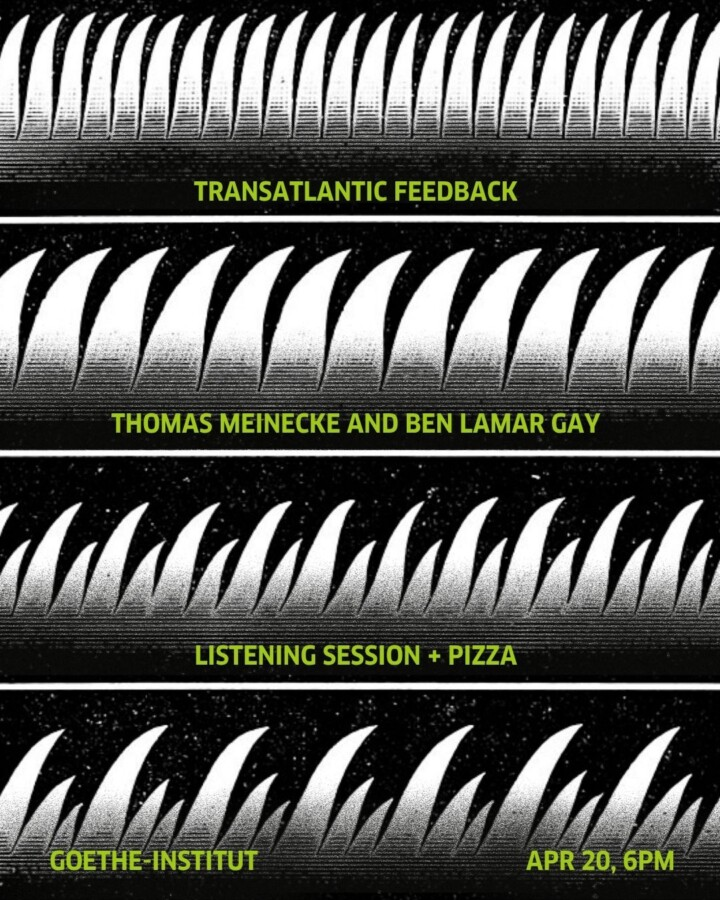

Listening Session | Thomas Meinecke and Ben LaMar Gay
Join us for a listening session and discussion featuring music selected by German author, musician, and DJ Thomas Meinecke and composer and multi-instrumentalist Ben LaMar Gay. Together, we’ll explore how music travels across oceans, countries, scenes, and political imaginaries, connecting artists and audiences in the Midwest and Europe. Drawing on his literary and musical practice, Meinecke will also reference and read from excerpts from his novels (Odenwald, Hellblau, TomBoy), which often engage with transatlantic cultural histories, including P-Funk, Afrofuturism, and Detroit techno.
After the listening session, all are welcome to continue the conversation over pizza and salad!
Please register in advance via Eventbrite and bring a state- or federally-issued photo ID for check-in in the 150 N. Michigan building lobby. This event is part of “Transatlantic Feedback,” a month-long tour by Thomas Meinecke through the U.S., organized together with Goethe-Institut USA.
ABOUT THE ARTISTS
Thomas Meinecke was born in Hamburg in 1955 and now lives near Munich and in Marseille. He has authored numerous novels and short stories published by Suhrkamp Verlag since 1986, most recently “Odenwald,” 2024. He is also a musician, with his band F.S.K. (Freiwillige Selbstkontrolle) founded in 1980, whose albums have been released on Daniel Richter’s Buback Label since 2008 (most recently “Topsy Turvy,” 2023). Meinecke has also collaborated on many electronic projects with Move D since 1998, worked as a radio DJ hosting his own show on Bayerischer Rundfunk from 1985 to 2021), and DJed at urban nightclubs (Berghain, Robert Johnson, Pudel Club, Rote Sonne, etc.). At Berlin’s Theater Hebbel am Ufer, he ran the dialogic event series “Plattenspieler” from 2007 until the first lockdown in 2020; since fall 2022, the series has continued at Berlin’s Volksbühne. In the winter semester of 2011/12, he held the poetry lectureship at Goethe University in Frankfurt am Main (“Ich als Text,” edition suhrkamp, 2012). He has held residencies at universities in Europe and the U.S., most recently: Writer in Residence at the University of St. Andrews, Scotland, and poetry lectureship on gender at the Technical University of Braunschweig. He has been awarded numerous awards, including the 2020 Berlin Literature Prize (with a visiting professorship at the Free University of Berlin in the summer semester of 2022). A “Text + Kritik” volume on Thomas Meinecke was published in 2021, and the poetological reader “Oceanic Writing” (Verbrecher Verlag) in 2022.
Ben LaMar Gay is a composer who moves sound, color, and space components through folkloric filters producing brilliant electro-acoustic collages. An explorer of many mediums who has been called a “visionary musician” by The New York Times, Gay has found a form of creative expression that begins with improvisation and expands beyond the limits of any single genre. He has been a member of the Association of the Advancement of Creative Musicians since 2010. With more than twenty years in vibrant experimental music scenes, his talents have earned him residencies globally. He is a highly sought-after collaborator by some of the most influential artists of today. He has worked with Theaster Gates, Nicole Mitchell, Mike Reed, Dorothée Munyaneza, Ntone Ejabe, and Qudus Onikeku, to name a few. These multidisciplinary collaborations as well as his own projects have brought his work to Danse Biennale of Lyon, African Dance Biennale Maputo, Chicago Symphony Center, The Barbican, Art Basel, and many other international stages. His work has been commissioned by Pierre Boulez Saal, Wet Ink Ensemble, Chicago Department of Cultural Affairs and Special Events, Northwestern University, University of Zurich, and National Theater of Strasbourg (France). He is recipient of the 3Arts Award, the Worldwide Award from the BBC’s Gilles Peterson, and was a Mellon Foundation Archival Fellow in 2022. Receiving accolades for a parade of more than eight albums, his recent release Yowzers, released via International Anthem Recording, solidified his place as an important new voice in American creative music. Gay adopts global visions while remaining true to his roots as a South Side Chicago native.